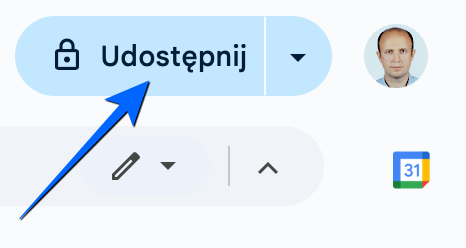
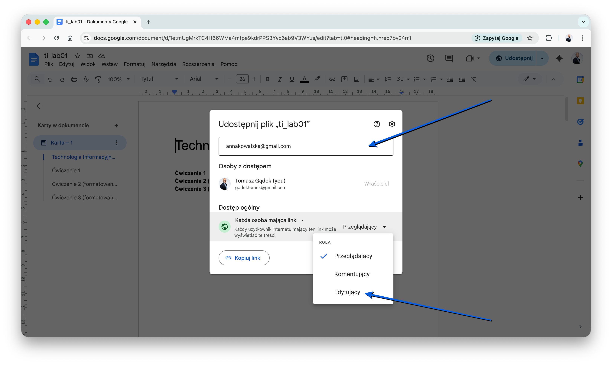

Laboratorium 1: Wprowadzenie do Google Docs.
Google Docs to darmowy edytor tekstu online, który pozwala na tworzenie, edytowanie i współdzielenie dokumentów w czasie rzeczywistym. Wszystkie pliki są przechowywane w chmurze na Dysku Google, co zapewnia do nich dostęp z dowolnego urządzenia z połączeniem internetowym.
Głównym celem zajęć jest zapoznanie się z edytorem Google Docs oraz poznanie mechanizmów jednoczesnej pracy wielu osób nad tym samym tekstem. Dowiesz się, jak udostępniać pliki oraz jak je poprawnie formatować, korzystając z dostępnych narzędzi i przygotowanych wskazówek.
Aby korzystać z Google Docs, załóż konto Google. Jest to konieczne, ponieważ wszystkie pliki są przechowywane w chmurze na Dysku Google, co zapewnia do nich dostęp z dowolnego urządzenia z połączeniem internetowym.
Jedną z największych zalet Google Docs jest możliwość udostępniania dokumentów innym osobom i wspólnej edycji w czasie rzeczywistym. Oznacza to, że kilku użytkowników może pracować nad tym samym dokumentem jednocześnie, widząc wprowadzane zmiany na bieżąco. Dzięki temu Google Docs doskonale sprawdza się w pracy zespołowej, zwłaszcza podczas tworzenia notatek, raportów czy prac grupowych.
Proszę wpisać swoje dane na listę obecności.
Proszę dobrać się w pary. Następnie jedna osoba z pary tworzy nowy dokument Google Docs (spójrz na film).
Następnie udostępnia go koledze / koleżance.

W kolejnym kroku proszę podać uprawnienia do edycji pliku podając adres e-mail kolegi / koleżanki z zespołu. Proszę wprowadzić do dokumentu (równolegle) swoje imiona i nazwiska.

Po wykonaniu ćwiczenia 1 kolejne zadania realizujemy już samodzielnie.
W udostępnionym pliku (strona 3) będą znajdowały się specjalne znaczniki, które pomogą Ci poprawnie sformatować dokument. Oto wskazówki, jak je interpretować:
Twoim zadaniem będzie poprawne sformatowanie tekstu zgodnie z powyższymi wskazówkami, a następnie usunięcie wszystkich {komentarzy}.
Otwórz dokument (strona 3) i skopiuj jego zawartość do nowego pliku. Następnie postępuj zgodnie z poniższym tutorialem.
Tym razem postaraj się samodzielnie sformatować dokument (strona 4 i 5). Zwróć uwagę na nowe elementy (wskazówki będą pomocne). W razie problemów poproś o pomoc prowadzącego zajęcia.
Nowe elementy w zadaniu:
Przygotuj harmonogram swoich zajęć w Google Docs, wzoruj się na oryginale udostępnionym przez AT Tarnów.
Wskazówki:
Praca w chmurze z dokumentami tekstowymi to dzisiaj standard, który znacząco ułatwia przygotowywanie notatek czy wspólnych projektów. Umiejętność sprawnej edycji plików online oraz dbałość o ich estetykę przekładają się na profesjonalny wygląd raportów i prac grupowych. Dzięki tym kompetencjom Twoje dokumenty będą czytelne i odpowiednio uporządkowane.
Strona główna